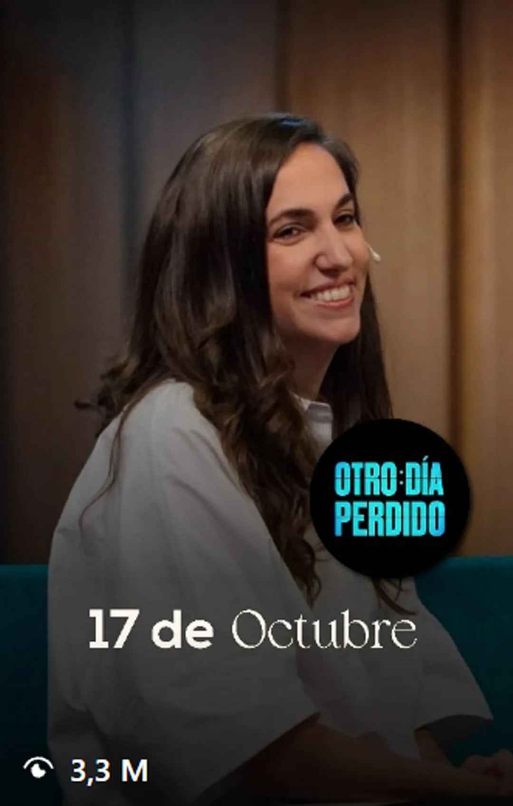
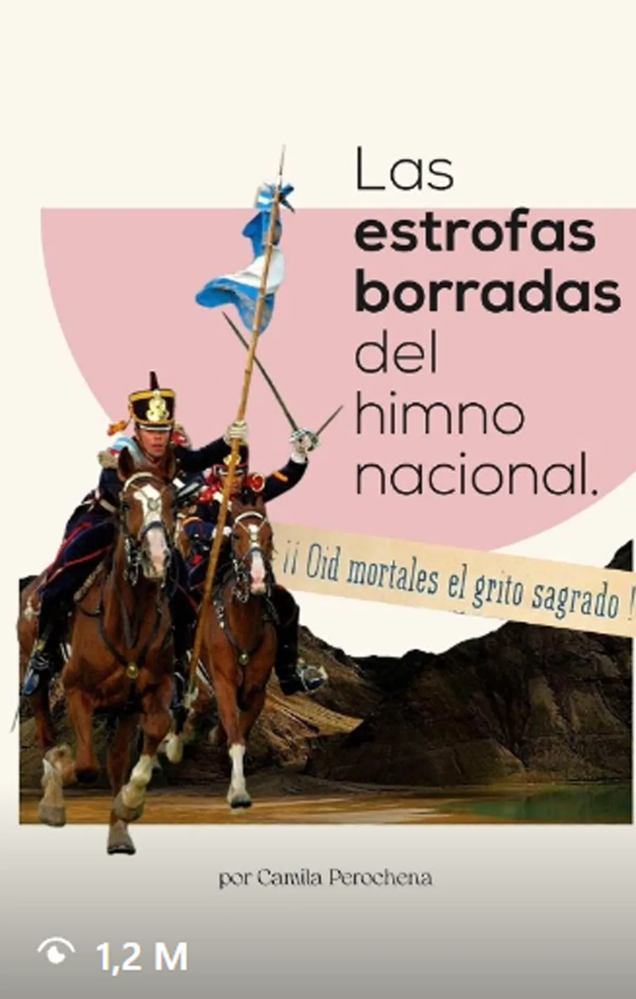
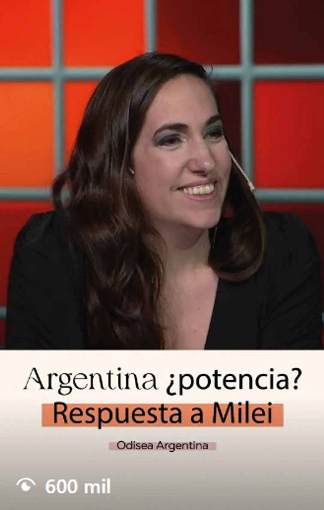

Soñé que volaba
OLGA
Intervenciones sobre historia, política y actualidad posteriormente adaptadas para redes.
Edición y adaptación de contenidos históricos y políticos para plataformas digitales, a partir de participaciones en streaming y televisión.
Edición audiovisual · Selección de contenidos · Desarrollo de formatos · Adaptación multiplataforma
Camila Perochena es historiadora y divulgadora, especializada en historia argentina y mundial. Participa regularmente en espacios de análisis y divulgación como Soñé que volaba, en OLGA, y Odisea Argentina, de Carlos Pagni.
Mi trabajo con ella se concentra principalmente en la edición y adaptación de esas intervenciones para plataformas digitales. A partir de materiales originalmente pensados para formatos largos, trabajo en la selección, construcción y edición de fragmentos capaces de funcionar como piezas autónomas sin perder el contexto histórico o argumental.
Durante aproximadamente un año y medio de colaboración, su comunidad pasó de alrededor de 14.000 a 100.000 seguidores, manteniendo un crecimiento orgánico sostenido.
El material de origen suele provenir de intervenciones extensas en streaming o televisión. Parte del trabajo consiste en identificar dentro de esas conversaciones una idea, explicación o intercambio que pueda sostenerse como una pieza independiente.
La edición no implica solamente reducir duración: también requiere reconstruir ritmo, contexto y progresión narrativa para que el contenido funcione dentro de las lógicas de consumo de las plataformas digitales sin simplificar excesivamente el argumento original.
Selección de piezas editadas a partir de intervenciones en streaming y televisión.



Intervenciones sobre historia, política y actualidad posteriormente adaptadas para redes.
Participaciones de análisis histórico y político utilizadas como material de origen para nuevas piezas digitales.
Evolución de la comunidad durante aproximadamente un año y medio de colaboración, acompañada por un flujo sostenido de contenidos derivados de sus intervenciones en medios y streaming.